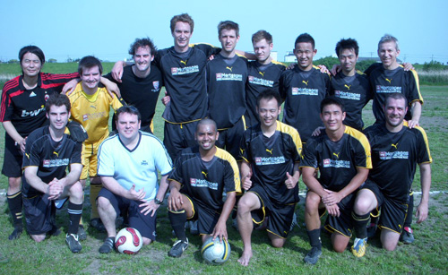

|
Misato, Sunday 10th May
It is with a tear in my eye that I write this, my last report, for the Panthers. I’m not sure if it because I am sad to leave or there is still dust in my eyes from playing in the sand pit which is Misato! I think this one has been done to death and Kev “conspiracy theory” Gray’s views on the subject are well known, to everyone in Tokyo!! Suffice to say it was a very nice day and nice weather for a bit of footy.
I have to say that I approached this game with some trepidation. Our last game was a hard won victory against an excellent Y-Abe side and I was nervous we were in for the same against Guarana Republic as they put up a bit of a fight last time we played them. Add in the lovely condition (!!!!!) of the pitch and I thought we might be in for a tight game.
I was wrong, within three minutes we were 1-0 up through a great goal by Sho, shortly another goal headed in by Ma, then another by someone else (probably Sho again). Now I usually find writing this thing hard enough when we score two or three goals, this lot were just taking the piss, by half time we had taken a secure lead at 4-0 and I had lost all idea of who had scored and when!
After half time, some water and a well deserved rest we started on the attack again, this time we were taking no prisoners, 6 goals in the second half put us to 10-0 and I have no idea who scored and in what order. I had to look at the score sheet to see who got the goals and here they are again for those of you who didn’t see them already!
Shotaro 5, Kev Gray 2, Romen 1, Ma 1, Tom 1
After reading the BFC report the other day I feel it is necessary to praise our ref who was excellent, saying that neither team got into it that much and the tackles were fair and left the ref little to do, even with no linesmen!
Now for some honourable mentions; Nick “the manager” Webb graced us with his presence for most of the game which was nice, thanks for the support Nick, you can put your cheerleaders outfit back away again now! Romen “Benitez” Barua was on top form and even scored in our strongest scoring game of the season, thanks Romen for not yelling at us today! Andy for, once again, saving me from lots of defensive snafus! Mikhail for his glorious left footed crosses, Rick for his monster throw ins, Kei for stretching on the half way line as a central defender working hard! Alan for managing to keep the ball through 6 or 7 tackles that all bounced off him, Kieran for earning his money saving one attempt on goal and getting all scratched in the process. Tom for his selfless acts of holding the ball and laying it off for everyone, Kev for some outstanding crosses and not one shot into space. Sho and Ma for some of the best Panthers football so far. Saco for playing in defense again! Scott for playing pretty much everywhere this season. I even got to play in attack for 5 minutes, but failed to score!! No wonder I play in defense!
So, this is our last game of the season, our last game in division 3 (for a while!!) and my last game for the foreseeable future and what a mighty game to do all those things. I don’t think I could have ended my time in the TML in a better way (well a goal would be nice!!).
On a personal note I want to say thanks to the whole team who I have had a great time playing with and I want to wish you all a great season next year and hope you’ll go straight up again! Also a big thanks to the guys at Footy Japan, cheers lads.
WE’RE GOOOOOIIIINNNGGGGG UUUUUPPPPPP!!!!!!!!!!!!!
Report by Lee Rawlinson.

|